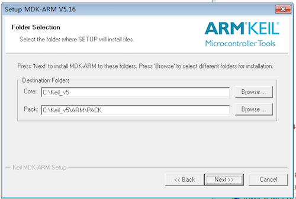
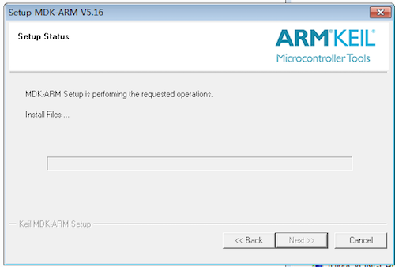
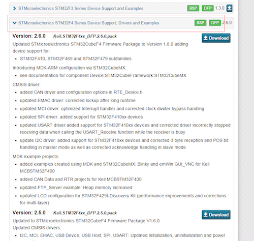

开发环境搭建
获取软件资源¶
想要使用JUMA的嵌入式SDK首先需要如下这些软件资源：
1. KEIL的编译环境¶
ARM御用的编译器，可以从相应的KEIL官网进行相应的下载。
下载地址：
https://www.keil.com/demo/eval/arm.htm
2. 烧录器驱动(JLink或STLink)¶

安装Keil¶
1). 双击MDKxxx.exe开始安装过程。
2). 当出现如下图所示的界面后，安装过程正式开始了。

3). 直接点击上图中的next，进入下一步的安装，之后会出现如下图所示的界面：

4). 选中图中红色框中的内容表示接受KEIL的协议，然后点击next进入下一步的安装，之后会出现如下的界面：

5). 这一步需要选择的是安装的位置，以及包的位置，包就是各种芯片的配置和标准库文件等，这个位置要记住，等会的时候可能会用到。选择好后，点击next会进入到下一个界面：

6). 这里需要的是填写相关的个人信息，不过经发现，这里可以随意的填写就可以了，感谢KEIL如此（人性化）的设计。当随意或者根据自己的情况填写好信息后点击next进入到下一个界面：

7). 在这个界面中需要稍作停留了，等待一段时间后，会进行一次询问，是否需要安装KEIL的一个串行下载工具：

8). 出现上图的选择后，在juma的整个方案中，并不需要这个，所以可以选择不安装，没必要去浪费那点空间。之后经过一点点时间等等待后就会提示安装成功了。

9).出现上图的界面后安装过程就完成了，但是在从KEIL5.10之后的版本开始内部集成了包管理机制，通过这个，可以方便的对各种mcu的库文件等进行管理。我们在接下来的教程里面详细的对包管理进行描述。
安装MCU包(Pack)¶
安装完成Keil之后会有提示更新packs操作，如下：

因为是在线下载所以受限于网络，下载更新往往会出现失败的情况，如下：

因此，这里我们建议直接导入packs的方式，首先从KEIL官网下载对应的pack包，链接如下：
下载地址：http://www.keil.com/dd2/pack/
下载对应版本的pack包，下载完成后双击.pack文件即可导入KEIL。

安装JLINK或STLink¶
以上是KEIL的相关内容，接下来安装JLINK或STLink
1). 下载到JLINK与STLink的安装包
2). 双击安装包文件直接我同意->NEXT->同意->Finish就完成了
3). 在设备管理中能看到相应的设备驱动，说明安装驱动成功